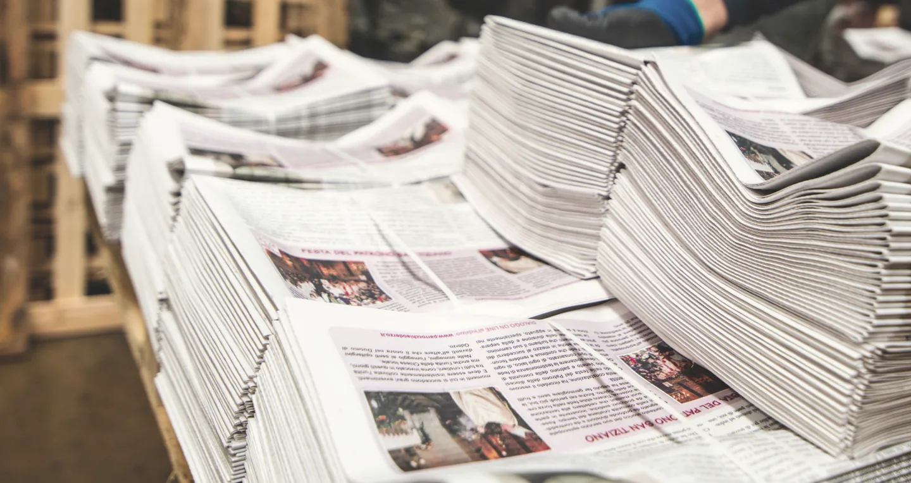
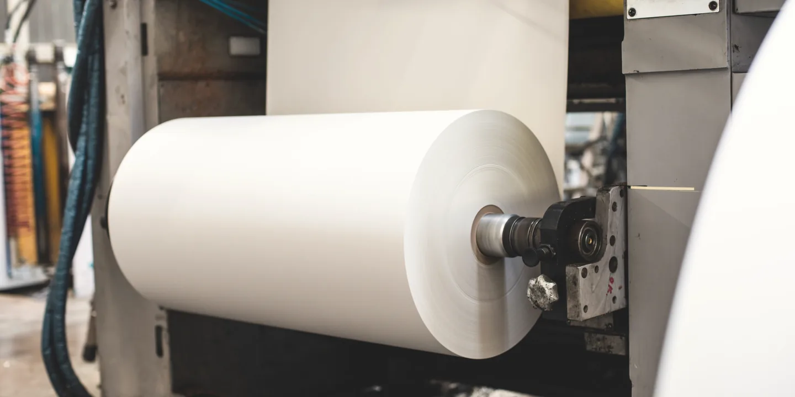
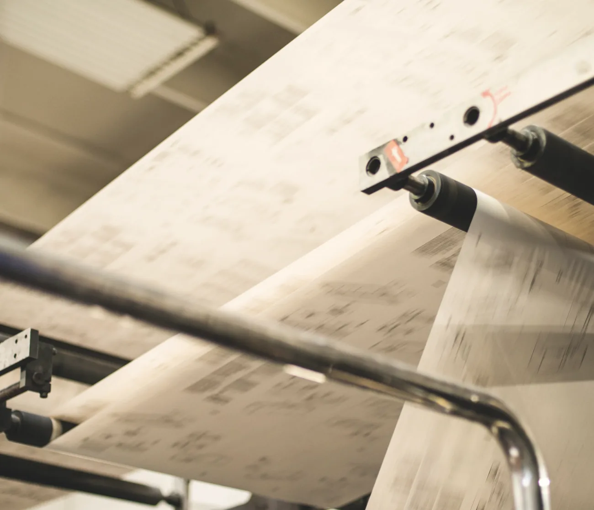

Manuali tecnici
Rotativa MAN giro 630; linea di incollaggio per riviste 21 × 29,7, da 4 a 48 facciate
La rotativa ha una piega potente che dà formati diversi; i manuali escono incollati e rifilati.
Stampiamo in rotativa offset quotidiani, settimanali, quindicinali, mensili e magazine, autocopertinati e non.

Due rotative Goss Universal, a Grisignano di Zocco e a Imola, con quattro torri colore a singola larghezza e doppio sviluppo. Per le tirature personalizzate c'è la stampa digitale a dati variabili.
Carte. Da giornale da 42 e 45 g per i quotidiani, migliorate da 48, 52, 60 e 70 g, uso mano da 70 e 80 g.
28,9 o 30 × 37-44 cmBase fissa, altezza variabile da 37 a 44 cm.

Lavoriamo per editori di quotidiani e periodici, free press, Grande Distribuzione e concessionarie di pubblicità: dalla pianificazione alla produzione redazionale, dalla stampa alla distribuzione postale.
Rotativa MAN giro 630; linea di incollaggio per riviste 21 × 29,7, da 4 a 48 facciate
La rotativa ha una piega potente che dà formati diversi; i manuali escono incollati e rifilati.
Linee Sitma
Accessori per accoppiare più pezzi, confezionamento e assemblaggio, etichettatura per la spedizione postale.
Dalla borsa alla TV, dal meteo all'oroscopo; reparto grafico a Mestre
Pagine di servizio nello stile grafico del giornale, infografiche su indicazione della redazione fino a un'ora prima della consegna, speciali pubblicitari anche per il web.

Tre sedi, oltre 10.000 m². Le rotative a Grisignano di Zocco e a Imola, nello stabilimento della Galeati, tipografia attiva dal 1816 che il Centro Servizi Editoriali ha rilevato nel 2014. A Mestre il reparto grafico e la stampa offset piana e digitale.
info@centroservizieditoriali.it
Via del Lavoro 18, 36040 Grisignano di Zocco (VI)
Apri la mappa